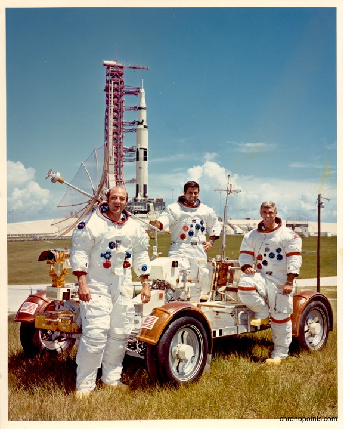

Eugene "Gene" Cernan flew on Gemini 9A and Apollo 10 before commanding Apollo 17. During Apollo 10, he helped test the Lunar Module during the final rehearsal for the Moon landing.
As commander of Apollo 17, Cernan became the eleventh person to walk on the Moon and, most famously, the last human to leave the lunar surface. He and Harrison Schmitt conducted three extensive moonwalks in the Taurus-Littrow Valley, traveling farther across the Moon than any previous crew.
Before departing the Moon, Cernan expressed hope that humanity would someday return. His words and final footsteps have become symbolic of the end of the Apollo era and humanity's last visit to the Moon.
Ron Evans served as the Command Module Pilot for Apollo 17. While Cernan and Schmitt explored the lunar surface, Evans remained in lunar orbit aboard the Command Module America, conducting scientific observations and managing spacecraft systems.
Evans played a critical role in the mission's success by ensuring the Command Module remained operational for rendezvous and the return journey to Earth. During the trip home, he performed a deep-space spacewalk to retrieve film canisters from the Service Module, adding to the scientific return of the mission.
Although he did not walk on the Moon, Evans traveled farther from Earth than most humans in history and remains an important part of the final Apollo crew.
Harrison "Jack" Schmitt was unique among Apollo astronauts because he was a professional geologist before joining NASA. Selected as part of NASA's first scientist-astronaut group, he brought specialized scientific expertise to Apollo 17.
During the mission, Schmitt became the twelfth and most recent person to walk on the Moon. His geological training allowed the crew to make especially detailed observations and collect scientifically valuable samples, including the famous orange-colored lunar soil that provided evidence of ancient volcanic activity.
Schmitt's participation highlighted NASA's growing emphasis on science during the later Apollo missions. After leaving NASA, he served as a U.S. Senator from New Mexico and continued advocating for space exploration and scientific research.